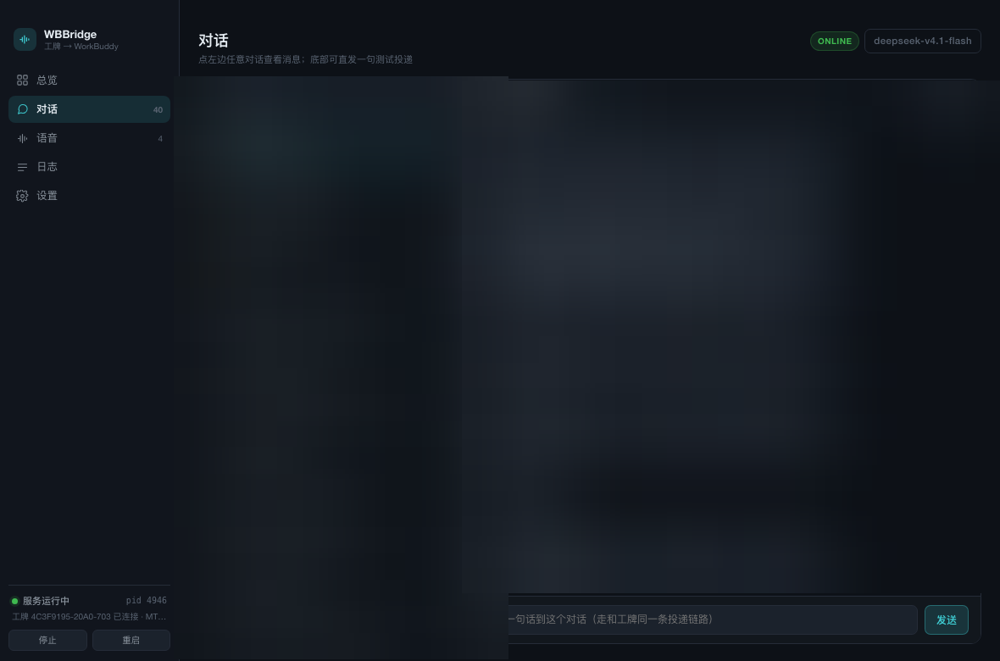
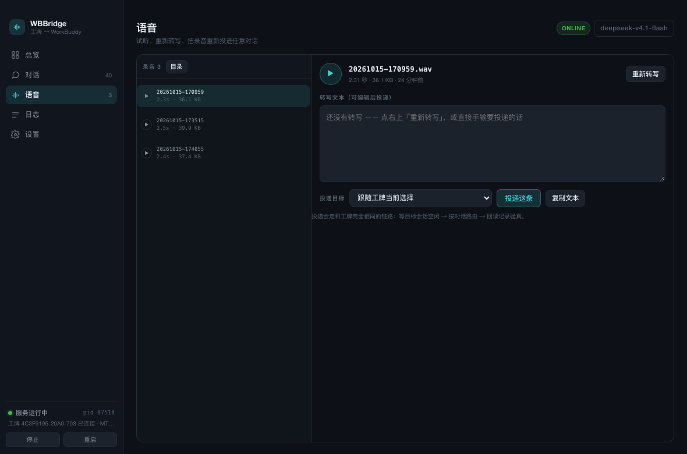
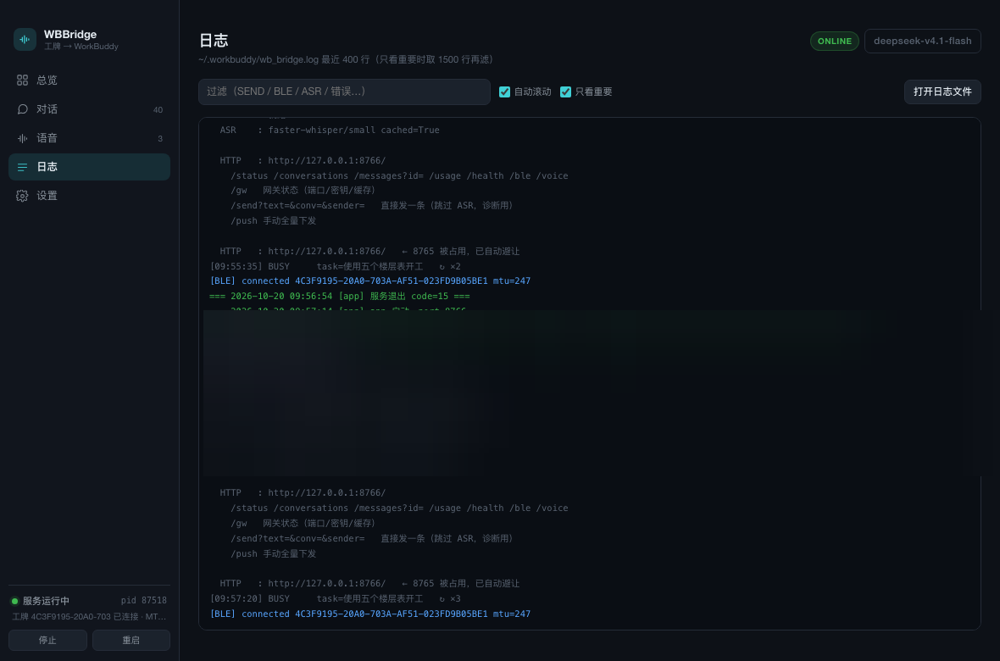
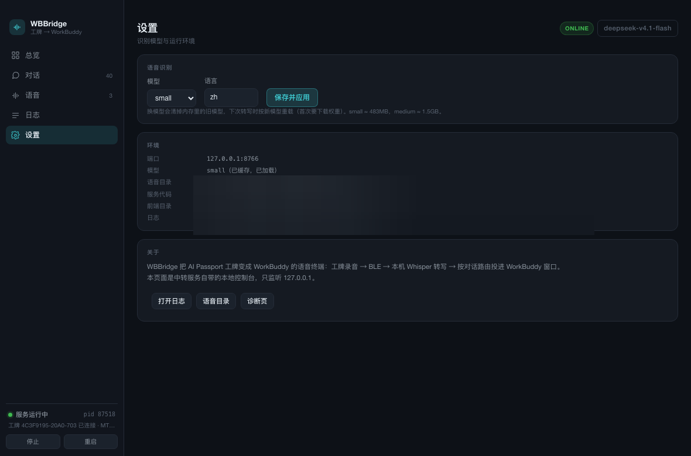

WBBridge 主窗口 · 总览之外的四页
同一套界面在
WKWebView
与浏览器里共用，1.5 秒同源轮询；
#voice
/
#logs
/
#settings
可深链接直达（总览见头图）
对话 · 完整消息流

对话
会话列表 + 全文消息流（不是工牌那种 120 字截断），底部可直接发一句测投递
语音 · 试听 / 重新转写 / 重新投递

语音
每条录音能试听、换模型重新转写、改完文字再投到任意对话
日志 · 只看重要（BLE 空帧 / IDLE 空转已滤掉）

日志
实时尾部刷新，噪声先滤再合并重复（
↻ ×N
），错误行标红
设置 · ASR 模型 / 语言 / 运行环境

设置
换 Whisper 模型与语言（热切换，下次转写生效），看 Python 路径、端口、PID